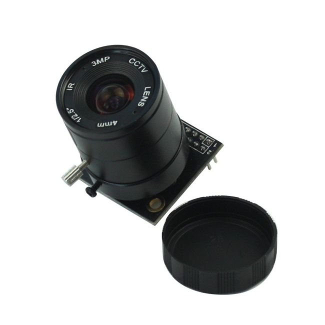

Embedded Systems · Digital Image Processing · PCB Design
For this project, I want to try and make a digital camera from scratch as much as possible. That means creating the pcb, writing the firmware, and coding the UI. I want the MVP to be able to take pictures, store them to an SD card/on board memory, and view them after being shot. In addition, the user should be able to change basic settings such as ISO, shutter speed, white balance, and switch between B&W or color. This project is currently still in the requirements phase, so check back here later for more updates.
